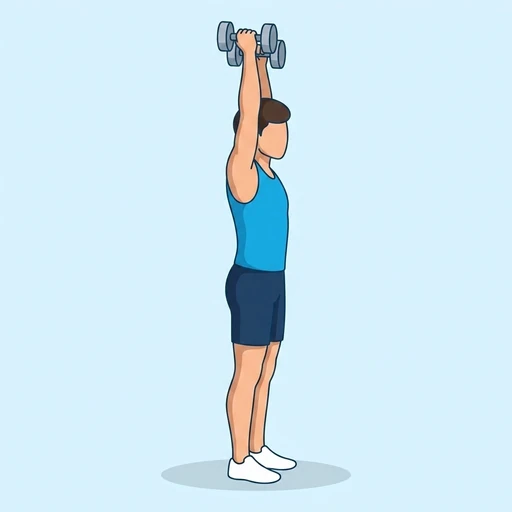
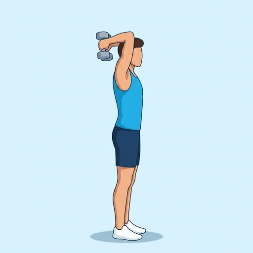
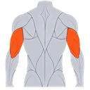
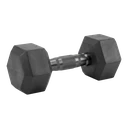

Dumbbell Tricep Extension
A single-arm overhead tricep extension for balanced arm development.
Upper arms · Dumbbell · Beginner


Muscles worked by the Dumbbell Tricep Extension
Primary

TricepsTriceps BrachiiAlso called: tricep, triceps, triceps brachii, horseshoe, tris.
Equipment

DumbbellAlso called: db, dumbell, hex dumbbell, rubber dumbbell, hand weight.
How to do the Dumbbell Tricep Extension
- Stand holding a dumbbell in one hand overhead.
- Lower the dumbbell behind your head by bending your elbow.
- Extend your arm back to the starting position.
- Keep your elbow close to your head.
- Repeat on both sides.
Form tips
- Move only your forearm, keeping the upper arm still.
- Brace your core to avoid arching your lower back.
- Choose a weight light enough to reach a full stretch.
At a glance
| Body part | Upper arms |
|---|---|
| Category | Strength |
| Force type | Push |
| Mechanic | Isolation |
| Difficulty | Beginner |
| Equipment | Dumbbell |
| Goals | Hypertrophy |
| Tags | Arm day, Knee safe, Lower back safe, Shoulder safe, No axial load |
| MET | 5.0 (metabolic equivalent, for calorie estimates) |
| Unilateral | No |
| Bodyweight | No |
| Dataset id | dumbbell-tricep-extension |
Dumbbell Tricep Extension in German & Spanish
| German | Kurzhantel Trizeps-Extension |
|---|---|
| Spanish | Extensión de Tríceps con Mancuerna |
Descriptions, instructions and tips ship in all three languages in the JSON.
Related exercises
Exercise data (JSON)
The record below is exactly what exercises.json ships for this exercise — names, descriptions, instructions and tips in English, German and Spanish.
{
"id": "dumbbell-tricep-extension",
"name_en": "Dumbbell Tricep Extension",
"name_de": "Kurzhantel Trizeps-Extension",
"name_es": "Extensión de Tríceps con Mancuerna",
"description_en": "A single-arm overhead tricep extension for balanced arm development.",
"description_de": "Eine einarmige Überkopf-Trizeps-Extension für ausgewogene Armentwicklung.",
"description_es": "Una extensión de tríceps en una mano por encima de la cabeza para un desarrollo equilibrado del brazo.",
"category": "strength",
"force_type": "push",
"mechanic": "isolation",
"difficulty": "beginner",
"equipment": "dumbbell",
"body_part": "upper_arms",
"primary_muscles": [
"triceps_brachii"
],
"goals": [
"hypertrophy"
],
"tags": [
"arm_day",
"knee_safe",
"lower_back_safe",
"shoulder_safe",
"no_axial_load"
],
"variation_group": "overhead-tricep-extension",
"is_unilateral": false,
"is_bodyweight": false,
"instructions_en": [
"Stand holding a dumbbell in one hand overhead.",
"Lower the dumbbell behind your head by bending your elbow.",
"Extend your arm back to the starting position.",
"Keep your elbow close to your head.",
"Repeat on both sides."
],
"instructions_de": [
"Stehe mit einer Kurzhantel in einer Hand über dem Kopf.",
"Senke die Kurzhantel durch Beugen des Ellbogens hinter den Kopf.",
"Strecke den Arm zurück in die Ausgangsposition.",
"Halte den Ellbogen nah am Kopf.",
"Wiederhole auf beiden Seiten."
],
"instructions_es": [
"Ponte de pie sujetando una mancuerna en una mano por encima de la cabeza.",
"Baja la mancuerna detrás de la cabeza doblando el codo.",
"Extiende el brazo de vuelta a la posición inicial.",
"Mantén el codo cerca de la cabeza.",
"Repite en ambos lados."
],
"tips_en": [
"Move only your forearm, keeping the upper arm still.",
"Brace your core to avoid arching your lower back.",
"Choose a weight light enough to reach a full stretch."
],
"tips_de": [
"Bewege nur den Unterarm, während der Oberarm ruhig bleibt.",
"Strecke den Arm oben vollständig, ohne das Ellbogengelenk zu überstrecken.",
"Spanne den Rumpf an und vermeide ein Hohlkreuz."
],
"tips_es": [
"Mantén el codo apuntando al techo durante todo el movimiento.",
"Baja la mancuerna despacio hasta sentir el estiramiento del tríceps.",
"Evita arquear la espalda baja manteniendo el abdomen firme."
],
"met": 5.0,
"images": {
"flat": {
"start": "images/flat/dumbbell-tricep-extension-start.webp",
"peak": "images/flat/dumbbell-tricep-extension-peak.webp"
}
}
}Fetch just this exercise
const { exercises } = await fetch(
"https://exercise-dataset.com/exercises.json"
).then(r => r.json());
const ex = exercises.find(e => e.id === "dumbbell-tricep-extension");Free for personal and commercial in-app use with attribution (“Exercise data by RepDB”) — see the license and ready-made attribution snippets. Redistributing the data as a dataset or API is not permitted.